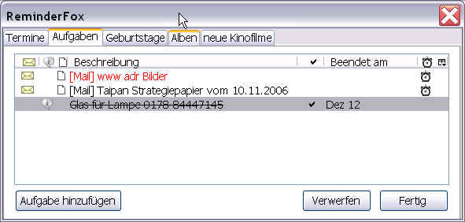
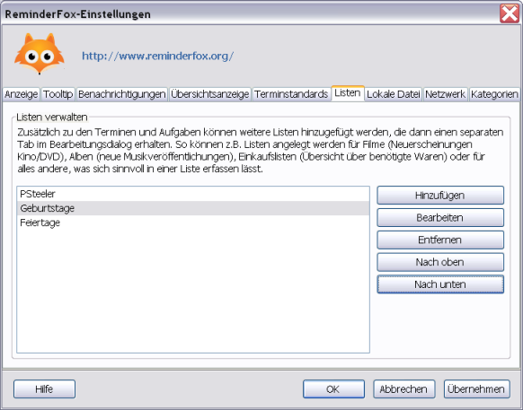
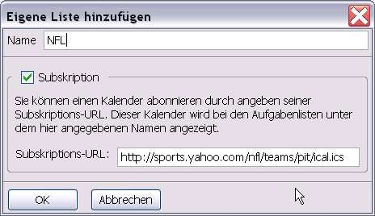

Aufgaben
Aufgaben
Aufgaben
Aufgaben'Aufgaben' sind Ereignisse, die einen Beginn- und/oder einen End-Zeitpunkt haben können.
Beispiel: Einschreiben für Sportkurs am Montag 10:00 bis 12:00 Uhr.
Es gibt einen separaten Tabulator für 'Aufgaben'. Diese Aufgabenliste und ihre
Spalten sind denen der Termine sehr ähnlich.
Eigene Aufgabengruppen lassen sich als 'Individuelle Listen' hinzufügen.
Siehe hierzu FAQ Individuelle Aufgabenlisten
Inhalt |
Hinzufügen einer Aufgabe erfolgt genauso wie das Hinzufügen eines Termins. Die Aufgabe hat grundsätzlich die gleichen Optionen wie ein Termin. Anders als bei Terminen ist hier das Datum optional. Zusätzlich ist die Möglichkeit "Im Tooltip anzeigen". Wird dies gewählt, wird die Aufgabe im Tooltip angezeigt, wenn der Mauszeiger auf das Schleifen-Symbol der Statusleiste geführt wird.
Durch Klick mit der rechten Maustaste auf die jeweilige Aufgabe wird ein Kontextmenü zur Bearbeitung aufgerufen:
Zusätzlich zu Terminen und Aufgaben können weitere Listen angelegt werden. Diese sind dann über einen separaten Tab aufrufbar.

Diese Listen könnten beinhalten: Filme (mit Erscheinungsdatum), Alben (für Neuerscheinungen), Einkaufsliste oder was auch immer in einer Liste zusammen gefasst werden kann. Dies ist für Leute gedacht, die gerne mit Listen arbeiten.
Individuelle Listen sind identisch zur Aufgabenliste. Somit gelten alle Optionen und Einstellungen genauso.
Mit dem Kontextmenü können Einträge sowohl innerhalb einer Liste als auch in jede andere Liste verschoben werden.
In den Einstellungen/Optionen unter dem Tab 'Listen' können die Einstellungen für Listen bearbeitet werden.

Mit dem Aufruf werden die Namen der bereits vorhandenen Listen angezeigt. Über die Schaltflächen ist ein Bearbeiten der Listen möglich:
Hinweis: Zu 'Subskription' siehe auch FAQ: Wann benutze ich Subscription?
Subscriptionen werden innerhalb von Reminderfox als besondere Aufgabenliste dargestellt. Die Einrichtung und Bearbeitung erfolgt -- wie bei 'Individuellen Listen' -- über "Option: Listen" und im Dialog [Eigene Liste hinzufügen].

Zusätzlich wird mit der "Subscriptions-URL" bestimmt, von wo die Liste abonniert wird.
Wie bei anderen individuellen Listen wird der Subscription ein beliebiger Name gegeben.
Hinweis: Subscriptionslisten haben geschützte Felder, die nicht geändert werden können. Allerdings kann jeder Eintrag zu den Terminen oder in andere Aufgabenlisten verschoben werden. Dort ist es dann möglich, den Termin zu
bearbeiten.